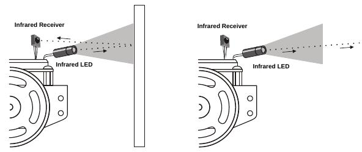
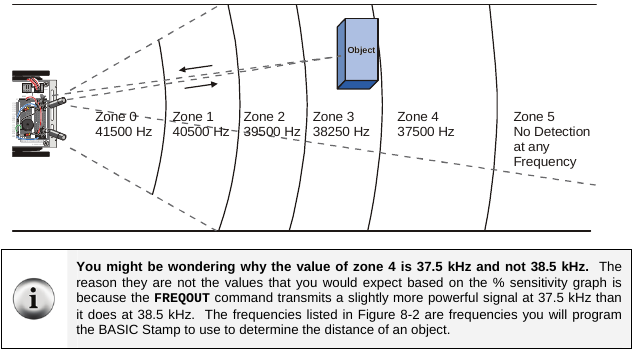

Infrared Sensors¶
Infrared sensors are the best sensors included in the robot kit. They offer more reliability since they don’t bend or lose shape over time like the Whiskers. They work in the same way that whiskers work in terms of whether an obstacle is detected or not detected.
| IN id | Sensor |
|---|---|
| IN9 | Left Sensor |
| IN0 | Right Sensor |
| Sensor State | Value |
|---|---|
| Undetected | 1 |
| Detected | 0 |
Example: Outputting values when detected¶
1 2 3 4 5 6 7 8 9 10 11 12 13 14 15 16 17 18 19 20 21 | left_ir_sensor VAR Bit
right_ir_sensor VAR Bit
Main:
DO
FREQOUT 8, 1, 38500
left_ir_sensor = IN9
FREQOUT 2, 1, 38500
right_ir_sensor = IN0
IF (left_ir_sensor = 0) AND (right_ir_sensor = 0) THEN
DEBUG "Both sensors detected something!"
ELSEIF (left_ir_sensor = 0) THEN
DEBUG "Left IR sensor detected something!"
ELSEIF (right_ir_sensor = 0) THEN
DEBUG "Right IR sensor detected something!"
ELSE
DEBUG "No detection..."
ENDIF
LOOP
|
How IR detection works¶
I want to explain what this block of code does inside the DO-LOOP:
1 2 3 4 5 | FREQOUT 8, 1, 38500
left_ir_sensor = IN9
FREQOUT 2, 1, 38500
right_ir_sensor = IN0
|
FREQOUT makes the IR LED shoot a 38.5 kHz IR signal outwards. Think of it like laser blasters from star wars.
Now, lets say that signal bounces off a wall like deflecting the laser in star wars.
The last thing to do is catch the signal in the IR Reciever. Which now makes so we can detect if there is an object ahead of us or not!
Here’s a pretty good diagram of what I mean:
Example: Utilizing the IR Sensors¶
1 2 3 4 5 6 7 8 9 10 11 12 13 14 15 16 17 18 19 20 21 22 23 24 25 26 27 28 29 30 31 32 33 34 35 36 37 38 39 40 41 42 43 44 45 46 47 48 49 50 51 52 53 54 55 56 | left_ir_sensor VAR Bit
right_ir_sensor VAR Bit
pulse_count VAR Byte
Main:
DO
FREQOUT 8, 1, 38500
left_ir_sensor = IN9
FREQOUT 2, 1, 38500
right_ir_sensor = IN0
IF (left_ir_sensor = 0) AND (right_ir_sensor = 0) THEN
' Left and Right IR sensors detected so we back up and make a U-turn by default
' A U-turn is just 2 left turns
GOSUB Back_Up
GOSUB Spin_Turn_Left
GOSUB Spin_Turn_Left
ELSEIF (left_ir_sensor = 0) THEN
GOSUB Back_Up
GOSUB Spin_Turn_Right
ELSEIF (right_ir_sensor = 0) THEN
GOSUB Back_Up
GOSUB Spin_Turn_Left
ELSE
' here the IR Sensors DONT detect anything so we pulse forward
GOSUB Pulse_Forward
ENDIF
LOOP
Pulse_Forward:
PULSOUT 13,850
PULSOUT 12,650
RETURN
Spin_Turn_Left:
FOR pulse_count = 0 TO 50
PULSOUT 13, 650
PULSOUT 12, 650
NEXT
RETURN
Spin_Turn_Right:
FOR pulse_count = 0 TO 50
PULSOUT 13, 850
PULSOUT 12, 850
NEXT
RETURN
Back_Up:
FOR pulse_count = 0 TO 50
PULSOUT 13, 650
PULSOUT 12, 850
NEXT
RETURN
|
Important notes about Example: Utilizing the IR Sensors¶
The way the subroutines are coded is that they have set amounts for how much the robot will turn or backup. This isn’t the most optimized way to navigate through a maze. You run the risk of either overshooting your turn or not turning enough. These risks should be very concerning to you even if they aren’t!
Example: Optimizing the use of IR Sensors¶
1 2 3 4 5 6 7 8 9 10 11 12 13 14 15 16 17 18 19 20 21 22 23 24 25 26 27 28 29 30 31 32 33 34 35 | left_ir_sensor VAR Bit
right_ir_sensor VAR Bit
pulse_left VAR Word
pulse_right VAR Word
Main:
DO
FREQOUT 8, 1, 38500
left_ir_sensor = IN9
FREQOUT 2, 1, 38500
right_ir_sensor = IN0
IF (left_ir_sensor = 0) AND (right_ir_sensor = 0) THEN
' Both sensors detect something so we back up
pulse_left = 650
pulse_right = 850
ELSEIF (left_ir_sensor = 0) THEN
' We pulse spin-turn the wheels to the right
pulse_left = 850
pulse_right = 850
ELSEIF (right_ir_sensor = 0) THEN
' We pulse spin-turn the wheels to the left
pulse_left = 650
pulse_right = 650
ELSE
' We pulse forward
pulse_left = 850
pulse_right = 650
ENDIF
' Apply the pulse to the wheels
PULSOUT 13, pulse_left
PULSOUT 12, pulse_right
LOOP
|
Notes about Example: Optimizing the use of IR Sensors¶
This is a much more accurate way to traverse a maze. Since changes to the direction the robot is moving is now done in single pulses. We get a much more reliable way to move throughout the maze. Now we don’t have to worry about turning too much or too little!
Conclusion¶
The IR sensors are reliable and are the ones I encourage you to use. One thing that I’d like to take a moment to address is that you can change the signal frequency at which the IR transmitter sends. Increasing or decreasing has effects on the distance at which an object can be detected.
For example:
FREQOUT 8, 1, 40500
left_ir_sensor = IN9